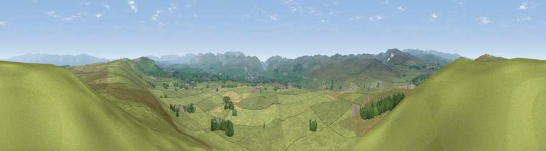

Viewpoint near Orton
#8406 in England · top 34% of its area beats it · near Orton · access?Where it is
The exact computed spot (NY 60425 09525). Click the marker for map links.
Public access: no public right of way or access land is recorded at this exact spot — it may be on private land. Computed from Natural England's CRoW access layer and OpenStreetMap rights of way — not the legal definitive map. Always verify locally.
The view, rendered

A 360° render of this exact spot computed from the terrain model, tree cover and land cover — summer colours, afternoon light, calibrated against photographs of famous viewpoints. Real trees, hedges and buildings will differ in detail.
The panorama
Grey silhouette: terrain skyline in each direction (720 bearings, Earth curvature and refraction included). Dashed green: skyline with trees (+15 m) and buildings (+8 m) as obstacles. Blue strip: how far the ground is visible on each bearing.
Where the view opens
Wedge length = distance to the farthest visible ground on that bearing (vegetation-aware). Rings at 10, 25 and 50 km.
What fills the view
95% grassland · 3% woodland · 1% cropland
Angular shares of the visible panorama (visual magnitude), not map area. Landscape diversity 0.10 (0–1 Shannon).
Key numbers
More beautiful places nearby
The staircase of upgrades: each row has a higher view potential than everything closer. Driving times are estimates from straight-line distance, calibrated against real road routing — check an actual route before setting out.
| Place | Direction | Drive | Score |
|---|---|---|---|
| Long Scar Pike [Coalpit Hill] | NW · 2 km | ~5 min | 68.9 |
| Long Fell | W · 5 km | ~11 min | 72.4 |
| Viewpoint near Sadgill | W · 7 km | ~15 min | 73.1 |
| Viewpoint near Sadgill | WSW · 8 km | ~16 min | 75.7 |
| Ashstead Fell | SSW · 8 km | ~16 min | 76.3 |
| Castle Fell | SSW · 9 km | ~17 min | 77.2 |
| Viewpoint near Garnett Bridge | SW · 10 km | ~19 min | 77.6 |
| Viewpoint c9961_7292 | SSE · 12 km | ~23 min | 78.2 |
54.47952, -2.61228 · source: screening · position refined by local search. Computed location — check access rights before visiting.